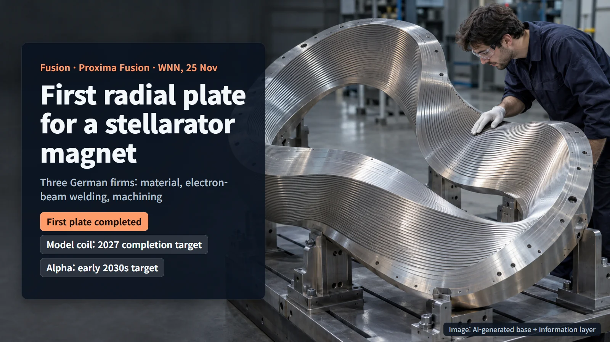
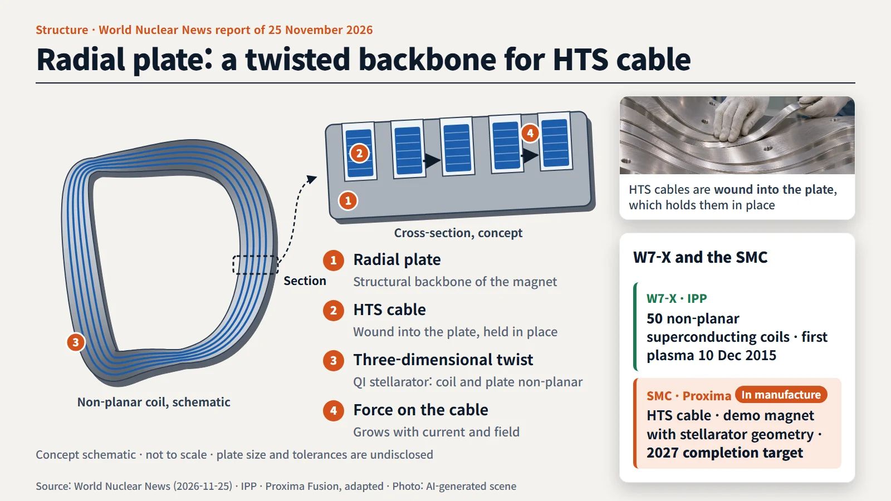
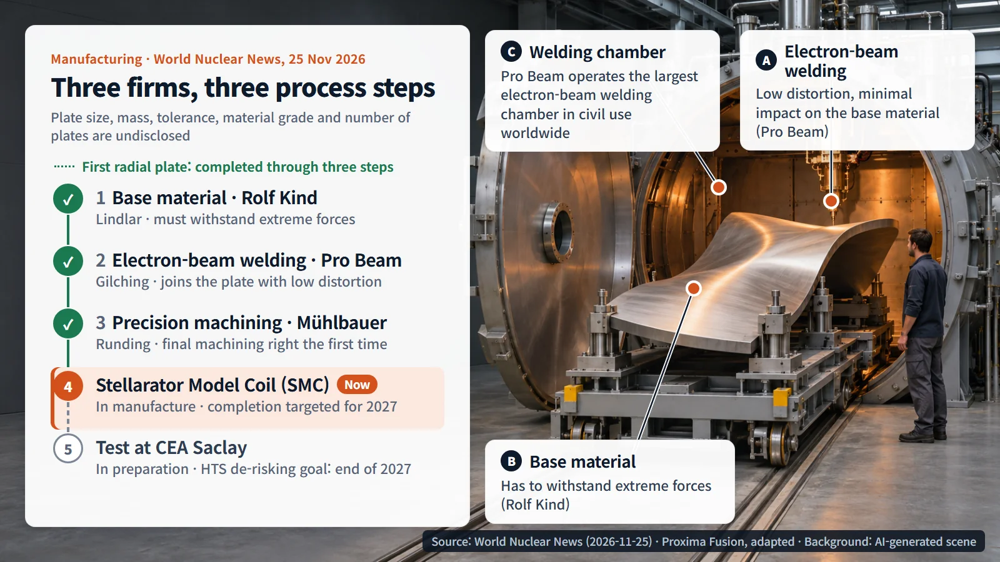
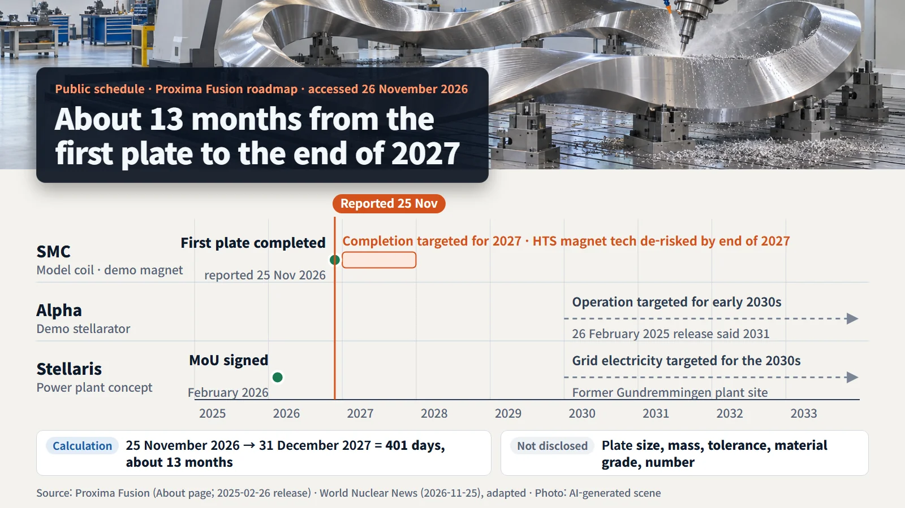

Germany · Fusion
The backbone of a stellarator magnet: how the first radial plate was made
Proxima Fusion's first radial plate for a stellarator superconducting magnet was made by three German companies, a step toward a model coil targeted for 2027.
Fusion news usually arrives as an experimental record, such as a plasma temperature or a pulse length. This item is different. Three German manufacturers have completed one metal structural plate for a superconducting magnet designed by Munich-based Proxima Fusion, World Nuclear News (WNN) reported on 25 November 2026. A single plate makes the news because the hardest job on the stellarator's road to a power plant is building magnets twisted in three dimensions, repeatedly, on a factory floor. This plate is the first physical result of Proxima and its industrial partners doing that job.

What a radial plate does inside the magnet
A fusion device holds its very hot plasma away from the walls with a magnetic field, and superconducting magnets produce that field. Proxima uses high-temperature superconducting (HTS) cables, which lose their electrical resistance at higher temperatures than conventional superconductors. The company says HTS allows stronger magnetic fields than conventional superconductors permit, and therefore more compact devices.
A stronger field brings a mechanical problem. A current-carrying conductor in a magnetic field feels a force that grows with both the current and the field. If the cable shifts under that force, the field drifts away from its design, so the cable needs a rigid frame to hold it in position. That frame is the radial plate. WNN describes radial plates as the "structural backbone" of a superconducting magnet: the HTS cables are wound into the plate, and the plate holds them in place.
In a stellarator, the shape of the plate makes the task harder still. Proxima's approach is the quasi-isodynamic (QI) stellarator, a design whose magnetic field is optimized so that the currents flowing around the plasma cancel out to zero. In a QI stellarator the magnet coils are twisted in three dimensions instead of lying flat, and the plates that carry them are twisted in the same way. WNN reports that making non-planar plates to industrial quality is one of the defining manufacturing challenges of QI stellarators.

Three companies, three process steps
The plate passed through three companies in turn. Base material supply, electron-beam welding and precision machining followed one another as three process steps. Rolf Kind of Lindlar supplied the base material, Pro Beam of Gilching joined the plate by electron-beam welding, and Mühlbauer Maschinenbau of Runding carried out the precision machining. Each step has its own requirement.

The first requirement is the strength of the material. Markus Kind, Managing Director of Rolf Kind, said the component has to deliver extraordinary mechanical properties in its later use and withstand extreme forces in one of the world's most challenging environments. The radial plate is the part that grips the cable and takes up those forces.
The second requirement is low distortion during joining. Electron-beam welding melts and joins metal with a tightly focused beam of electrons in a vacuum. Thorsten Löwer, Managing Director of Pro Beam, said fusion components must carry big mechanical loads with very high accuracy, and that electron-beam welding suits this because it welds with low distortion and minimal impact on the base material, which helps to achieve high material quality and tight tolerances. According to WNN, Pro Beam operates the largest electron-beam welding chamber in civil use worldwide.
The third requirement is the accuracy of the last cut. Christoph Mühlbauer, Managing Director of Mühlbauer Maschinenbau, said that in the end the real part has to be machined, and at least the final machining has to be right the first time. By then the plate already carries the results of both earlier steps, which raises the stakes of the final cut.
All three companies are members of Proxima's Alpha Alliance, which according to WNN brings together more than 50 industrial partners. The plate's size, mass, tolerance figures and material grade, and the number of plates one model coil needs, have not been disclosed. WNN says only that this is "the first of many".
The line from Wendelstein 7-X to the model coil
Germany has built superconducting coils twisted in three dimensions once before. Wendelstein 7-X (W7-X), operated by the Max Planck Institute for Plasma Physics (IPP) in Greifswald, is the world's largest stellarator, and 50 non-planar superconducting coils produce the field that confines its plasma. According to IPP, main assembly was concluded in 2014 and the first plasma was produced on 10 December 2015. Investment from 1995 until the device reached its final configuration in December 2021 amounted to 460 million euros.
Proxima, founded in 2023, is the first spin-out from IPP, and the company says it builds directly on W7-X. A like-for-like comparison shows where the new plate sits.
| Item | W7-X | Model coil (SMC) |
|---|---|---|
| Who builds it | IPP (research institute) | Proxima Fusion and industrial partners |
| Coil shape | 50 non-planar coils | Demo magnet with stellarator geometry |
| Conductor | Superconducting (per IPP) | HTS cable |
| Stage | First plasma on 10 December 2015 | In manufacture; completion targeted for 2027 |
(Source: IPP, Wendelstein 7-X page, and Proxima Fusion, About page, adapted)
Proxima says W7-X proved that an optimized stellarator can confine hot, high-density plasma. Its Stellarator Model Coil (SMC) adds two things on top of that. One is the use of HTS cable in a twisted coil; the other is building up an industrial supply chain that will carry on to Alpha and the power plants after it. Proxima describes the SMC as the first large-scale stellarator HTS magnet. Chief Executive Officer Francesco Sciortino said the three-dimensional geometry is the key challenge in both design and manufacturing of stellarator magnets, and that the radial plates are a tangible result of engineers and industrial partners working through that challenge together.
What remains before the 2027 model coil and Alpha in the early 2030s
The schedule after the first plate is set out in Proxima's published roadmap. The SMC is currently in manufacture, and the company's stated goals are to complete it in 2027 and, by the end of 2027, to de-risk key HTS magnet technology for stellarators. Proxima is preparing to test the coil at the French Alternative Energies and Atomic Energy Commission (CEA) in Saclay, near Paris. From 25 November 2026, when the first plate was reported, to 31 December 2027 is 401 days, which works out to about 13 months. That period has to hold the manufacture of further plates, the winding of the HTS cable and the assembly of the coil.

After the SMC comes the demonstration stellarator Alpha, designed to achieve net energy gain (Q>1), meaning its plasma generates more energy than it consumes, from a stellarator for the first time. Its start date is worded differently over time: Proxima's press release of 26 February 2025 gave 2031, and the company's current description says the early 2030s, the wording this article follows. Sciortino said each delivery builds manufacturing experience that will be carried forward into the magnets for Alpha.
Beyond Alpha stands Stellaris, the concept for a first commercial power plant. In February 2026 Proxima signed a memorandum of understanding with the Free State of Bavaria, RWE and IPP. According to WNN, it outlines a roadmap that begins with building Alpha near IPP in Garching and leads to constructing Stellaris at the former Gundremmingen nuclear power plant site, which RWE is decommissioning. The company's stated goal for Stellaris is to put fusion electricity on the grid in the 2030s.
On this schedule, the completion of one plate is the confirmed fact today, and the rest are targets and plans. The first checkpoints to watch are whether further plates keep arriving and whether the SMC finishes assembly within 2027 and enters testing at CEA. Ahead of any plasma record, the stellarator power plant timetable will turn on whether twisted metal plates come out to design dimensions again and again.